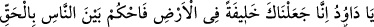
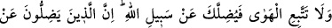
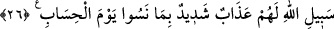

verilmesidir. Oysa söz konusu milletin mensupları Allah’a bile Allah’ın bize Yüce
Kitab’ında nakletmiş olduğu iftiraları atabilmişlerdir. Vaaz meclisinde bu gibi kıssaları
anlatan vâizlere Allah da melekleri de gazap edecektir! Çünkü anlattıkları, kalplerinde
hastalık bulunan günahkârların eline verilmiş birer delil olmaktadır. Bu gibi insanlar,
Bir peygamber bile böylesi hatâlara düşebilmişse ben kimim ki düşmeyeyim!?
diyebileceklerdir.
Hâsılı vâizin yapması gereken Allah’ı hatırlatmak, peygamberlerine tâzim
göstermek; ümmetine mensup âlimleri yüceltici şeyler anlatmak; insanların
cennete imrenip cehennemden ve âhirette Allah’ın önünde bekleme vaktinin
dehşetinden korkmalarını sağlamaktır. Böylece vaaz meclisi, tamamıyla rahmet
olmuş olur.
Şeyh Şa’rânî (k.s.) el-Kibrîtü’l-ahmer adlı eserinde der ki: Aşağıdaki ifâdelerin
niçin vahyedilmiş olduğunu (menât) da araştırmamak gerekir: “Şayet sen, kaba, katı
yürekli olsaydın, hiç şüphesiz, etrafından dağılıp giderlerdi” (Âl-i İmrân 3/159),
“Dünyayı isteyeniniz de vardı, âhireti isteyeniniz de vardı” (Âl-i İmrân 3/152). Çünkü
avam tabakası, bunların nüzûl sebeplerini duydukları zaman Sahâbîler kendilerine basit
insanlar olarak gelebilir ve Sahâbîlerin bazı aykırı davranışlarını kendilerininkine delil
sayabilirler.
Hüccetü’l-İslâm Gazzâlî de der ki: Hz. Hüseyin’in öldürülüş hikâyesini ve
Sahâbîler arasındaki anlaşmazlık ve düşmanlıkları anlatmak, başta vâizler olmak üzere
herkese haramdır. Çünkü bu, insanların dinin temel direkleri olan Sahâbîlere karşı öfke
hislerini kabartır; onlar hakkında ileri geri konuşmalarına sebebiyyet verir. Bu
bakımdan aralarındaki çekişmeler, sahih yorumlara tabi tutulmalı ve meselâ bu
husûmetlerin dünyalık ve reislik peşinde koşmaktan değil, bir içtihad hatâsından ileri
geldiği söylenmelidir ki bu da bilinen bir husustur.
Hâsılı, has kulların mâsiyetleri, başkalarının tabîî yapıdan kaynaklanan arzu ve
isteklere dayalı mâsiyetlerine benzemez. Onların mâsiyetleri, sırf te’vil hatâsından ileri
gelir. Allah da husûmete götüren bu te’villerin hatâlı olduğunu kendilerine bildirince,
kendilerinin isyan etmiş olduğuna hükmederler ve tevbe edip O en yüce ihsân sâhibinin
hükmüne başvururlar.
26. Ey Dâvûd! Biz seni yeryüzünde halife yaptık. O halde insanlar arasında
adâletle hükmet. Hevâ ve hevese uyma, sonra bu seni Allah’ın yolundan saptırır.